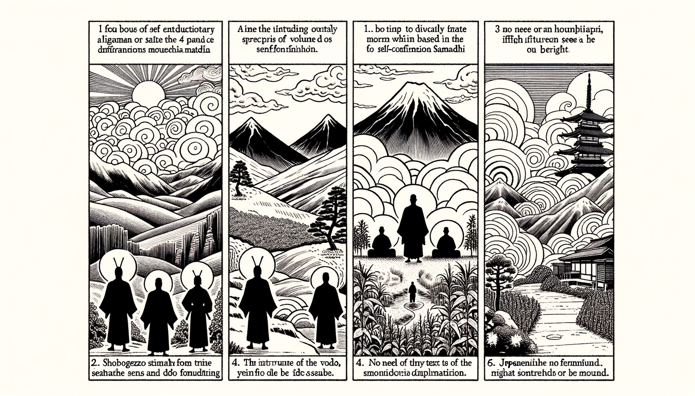

七十五巻 巻一覧
正法眼藏第69 自證三昧
本ページは各巻の紹介ページです。tools/gen_web_volumes.py が doc/正法眼蔵.txt から要点の短い抜粋を載せています（全文の引用ではありません）。
出典（原文）: https://shomonji.or.jp/zazen/doc/genzou.html
原文・現代語訳の全文は 全文ページを参照してください。
この巻の紹介（概要）
道元『正法眼蔵』七十五巻の第69篇「自證三昧」です。禅籍・経典への引用や語の行間が重なりやすいので、一度ですべてを要約に還元しない読み方を推奨します。問答 Bot では巻スコープにこの題名を含めると応答が安定しやすいことがあります。
語彙の足場
- 題名語：巻題「自證三昧」は、道元が本章で特に扱う論点の看板です。辞書義だけに固定せず、原文中の用例で意味を確かめます。
- 引用と典故：公案・経文の引用は、一字一句の照応（何に答えているか）を押さえると全体が見えやすくなります。
- 学び方：抜粋だけでも音読し、分からない箇所は印を付けて後から問うとよいです。
原文（要点の抜粋）
当巻の冒頭付近からの短い抜粋です。長い引用は載せていません。全文は全文ページを参照してください。出典はリポジトリ内 doc/正法眼蔵.txt です。原文の参照元: https://shomonji.or.jp/zazen/doc/genzou.html
諸佛七佛より、佛佛祖祖の正傳するところ、すなはち修證三昧なり。いはゆる或從知識、或從經卷なり。これはこれ佛祖の眼睛なり。このゆゑに、
曹谿古佛、問僧云、還假修證也無（還修證を假るや無や）。
僧云、修證不無、染汚卽不得（修證は無きにあらず、染汚することは卽ち得ず）。
しかあればしるべし、不染汚の修證、これ佛祖なり。佛祖三昧の霹靂風雷なり。
或從知識の正當恁麼時、あるいは半面を相見す、あるいは半身を相見す。あるいは全面を相見す、あるいは全身を相見す。半自を相見することあり、半他を相見することあり。神頭の披毛せるを相證し、鬼面の戴角せるを相修す。異類行の隨他來あり、同條生の變異去あり。かくのごとくのところに爲法捨身すること、いく千萬廻といふことしらず。爲身求法すること、いく億百劫といふことしらず。これ或從知識の活計なり、參自從自の消息なり。瞬目に相見するとき破顔あり、得髓を禮拜するちなみに斷臂す。おほよそ七佛の前後より、六祖の左右にあまれる見自の知識、ひとりにあらず、ふたりにあらず。見他の知識、むかしにあらず、いまにあらず。
或從經卷のとき、自己の皮肉骨髓を參究し、自己の皮肉骨髓を脱落するとき、桃花眼睛づから突出來相見せらる、竹聲耳根づから、霹靂相聞せらる。おほよそ經卷に從學するとき、まことに經卷出來す。その經卷といふは、盡十方界、山河大地、草木自他なり。喫飯著衣、造次動容なり。この一一の經典にしたがひ學道するに、さらに未曾有の經卷、いく千萬卷となく出現在前するなり。是字の句ありて宛然なり、非字の偈あらたに歴然なり。これらにあふことをえて、拈身心して參學するに、長劫を消盡し、長劫を擧起すといふとも、かならず通利の到處あり。放身心して參學するに、朕兆を抉出し、朕兆を趯飛すといふとも、かならず受持の功成ずるなり。
いま西天の梵文を、東土の法本に翻譯せる、わづかに半萬軸にたらず。これに三乘五乘、九部十二部あり。これらみな、したがひ學すべき經卷なり。したがはざらんと廻避せんとすとも、うべからざるなり。かるがゆゑに、あるいは眼睛となり、あるいは吾髓となりきたれり。頭角正なり、尾條正なり。他よりこれをうけ、これを他にさづくといへども、ただ眼睛の活出なり、自他を脱落す。ただ吾髓の附囑なり、自他を透脱せり。眼睛吾髓、それ自にあらず他にあらざるがゆゑに、佛祖むかしよりむかしに正傳しきたり、而今より而今に附囑するなり。拄杖經あり、横説縱説、おのれづから空を破し有を破す。拂子經あり、雪を澡し霜を澡す。坐禪經の一會兩會あり。袈裟經一卷十袟あり。これら諸佛祖の護持するところなり。かくのごとくの經卷にしたがひて、修證得道するなり。あるいは天面人面、あるいは日面月面あらしめて、從經卷の功夫現成するなり。
しかあるに、たとひ知識にもしたがひ、たとひ經卷にもしたがふ、みなこれ自己にしたがふなり。經卷おのれづから自經卷なり。知識おのれづから自知識なり。しかあれば、遍參知識は遍參自己なり、拈百草は拈自己なり、拈萬木は拈自己なり。自己はかならず恁麼の功夫なりと參學するなり。この參學に、自己を脱落し、自己を契證するなり。
これによりて、佛祖の大道に自證自悟の調度あり、正嫡の佛祖にあらざれば正傳せず。嫡嫡相承する調度あり、佛祖の骨髓にあらざれば正傳せず。かくのごとく參學するゆゑに、人のために傳授するときは、汝得吾髓の附囑有在なり。吾有正法眼藏、附囑摩訶迦葉なり。爲説はかならずしも自他にかかはれず、他のための説著すなはちみづからのための説著なり。自と自と、同參の聞説なり。一耳はきき、一耳はとく。一舌はとき、一舌はきく。乃至眼耳鼻舌身意根識塵等もかくのごとし。さらに一身一心ありて證するあり、修するあり。みみづからの聞説なり、舌づからの聞説なり。昨日は他のために不定法をとくといへども、今日はみづからのために定法をとかるるなり。かくのごとくの日面あひつらなり、月面あひつらなれり。他のために法をとき法を修するは、生生のところに法をきき法をあきらめ、法を證するなり。今生にも法をたのためにとく誠心あれば、自己の得法やすきなり。あるいは他人の法をきくをも、たすけすすむれば、みづからが學法よきたよりをうるなり。身中にたよりをえ、心中にたよりをうるなり。聞法を障礙するがごときは、みづからが聞法を障礙せらるるなり。生生の身身に法をとき法をきくは、世世に聞法するなり。前來わが正傳せし法を、さらに今世にもきくなり。法のなかに生じ、法のなかに滅するがゆゑに。盡十方界のなかに法を正傳しつれば、生生にきき、身身に修するなり。生生を法に現成せしめ、身身を法ならしむるゆゑに、一塵法界ともに拈來して法を證せしむるなり。
しかあれば、東邊にして一句をききて、西邊にきたりて一人のためにとくべし。これ一自己をもて聞著説著を一等に功夫するなり。東自西自を一齊に修證するなり。なにとしてもただ佛法祖道を自己の身心にあひちかづけ、あひいとなむを、よろこび、のぞみ、こころざすべし。一時より一日におよび、乃至一年より一生までのいとなみとすべし。佛法を精魂として弄すべきなり。これを生生をむなしくすごさざるとす。
しかあるを、いまだあきらめざれば人のためにとくべからずとおもふことなかれ。あきらめんことをまたんは、無量劫にもかなふべからず。たとひ人佛をあきらむとも、さらに天佛あきらむべし。たとひ山のこころをあきらむとも、さらに水のこころをあきらむべし。たとひ因緣生法をあきらむとも、さらに非因緣生法をあきらむべし。たとひ佛祖邊をあきらむとも、さらに佛祖向上をあきらむべし。これらを一世にあきらめをはりて、のちに他のためにせんと擬せんは、不功夫なり、不丈夫なり、不參學なり。
およそ學佛祖道は、一法一儀を參學するより、すなはち爲他の志氣を衝天せしむるなり。しかあるによりて、自他を脱落するなり。さらに自己を參徹すれば、さきより參徹他己なり。よく他己を參徹すれば、自己參徹なり。この佛儀は、たとひ生知といふとも、師承にあらざれば體達すべからず、生知いまだ師にあはざれば不生知をしらず、不生不知をしらず。たとひ生知といふとも、佛祖の大道はしるべきにあらず、學してしるべきなり。
図解（4コマ・AI生成）
教義の根拠は原文・出典に従い、漫画は比喩の補助に留めてください。

深掘り（読解のコツ）
- 道元文は定義の羅列に見えても、多くの場合誤解への遮断と正伝の姿勢が背骨になっています。
- 「当体」「現成」「即」などの語が出たら、その巻独自の差別相にどう接続しているかをメモしておくとよいです。